솔애드 설치 가이드
그누보드5에 동영상 게시판, 광고 요청 게시판, 동영상 광고 관리자를 설치하는 순서예요. SSH 없이 FTP와 브라우저만으로 설치할 수 있어요.
1. 구성 파일
압축을 풀면 아래처럼 세 가지가 들어 있어요. 서버에 올리는 것은 upload 폴더
안의 파일뿐이에요.
solad-gnuboard-{{VERSION}}/
├─ README.txt 빠른 설치 요약
├─ docs/ 이 설치 가이드와 사용 도움말
│ ├─ install.html
│ ├─ help.html
│ └─ nginx.conf.sample nginx 보안 설정 예시(선택)
└─ upload/ 그누보드 루트에 그대로 올리는 파일
├─ ads/ 솔애드 광고 관리자 (주소: /ads/)
│ ├─ setup.php 웹 설치 화면 (주소: /ads/setup.php)
│ ├─ index.php api/ assets/ player/ examples/
│ └─ src/ hosts/ admin/ database/ bin/ 내부 폴더
├─ extend/solad.extend.php
├─ skin/board/solad_video/ 동영상 갤러리 스킨(PC)
├─ skin/board/solad_request/ 광고 요청 스킨(PC)
├─ skin/board/solad_video_light/ solad_request_light/ 밝은 테마용(PC)
├─ mobile/skin/board/solad_video/ (모바일)
├─ mobile/skin/board/solad_request/ (모바일)
├─ mobile/skin/board/solad_video_light/ solad_request_light/ (모바일)
└─ theme/solad/ 솔애드 데모 테마(선택)| 구성 | 하는 일 |
|---|---|
동영상 갤러리 스킨 solad_video |
영상 파일·HLS·외부 주소로 글을 올리고, 솔애드 플레이어로 재생해요. 지면 편성한 광고가 재생 전·중·후에
나와요. 밝은 테마(그누보드 기본 테마)는 solad_video_light, 솔애드 테마는
solad_video를 써요.
|
광고 요청 스킨 solad_request |
회원이 광고 기간·예산·소재를 적어 광고를 요청하는 게시판이에요. 관리자 화면에서 상태별로 모아 봐요. |
광고 관리자 /ads/ |
하우스 광고 등록, 지면 편성, 플레이어 설정, 업로드 동영상 관리, 통계를 다뤄요. 그누보드 최고관리자 로그인으로 들어가요. |
extend/solad.extend.php |
그누보드 관리자 메뉴에 "솔애드 광고 관리"를 넣고, 게시판 수정 화면에 영상 추가 기능 설정을 붙여요. |
테마 solad |
솔애드를 소개하는 어두운 동영상 사이트 테마예요. 쓰지 않아도 스킨과 관리자는 그대로 동작해요. |
2. 필요 환경
| 항목 | 조건 |
|---|---|
| 그누보드 | 5.6 이상 (5.6.43에서 확인) |
| PHP |
8.2 이상, 확장 pdo_mysql, fileinfo, mbstring, json
|
| DB | MySQL 5.7 이상 또는 MariaDB 10.3 이상 (그누보드와 같은 DB를 써요) |
| 웹 서버 | 그누보드가 동작하는 Apache 또는 nginx. 따로 설정할 것은 없어요(nginx는 보안 설정을 넣으면 좋아요). |
| ffmpeg (선택) | 커버 이미지·진행바 미리보기·하이라이트를 만들 때만 써요. 없어도 재생과 광고는 동작해요. |
| ZipArchive (선택) | HLS 묶음(zip)으로 영상을 올릴 때만 써요. |
3. 파일 올리기
FTP 프로그램(FileZilla 등)으로 그누보드 루트, 즉 common.php가 있는 폴더를 열고
upload 폴더 안의 다섯 항목을 그대로 올려요.
그누보드 루트/
├─ common.php ← 여기가 루트예요
├─ ads/ ← 새로 생겨요
├─ extend/ ← solad.extend.php가 추가돼요
├─ skin/board/ ← solad_video, solad_request와 밝은 테마용 *_light가 추가돼요
├─ mobile/skin/board/
└─ theme/ ← solad가 추가돼요upload 폴더째 올리면 주소가 /upload/ads/가 되어 동작하지
않아요. 기존 파일을 덮어쓰지 않으니 그누보드 원본은 바뀌지 않아요.
주소가 곧 파일 경로라서 ads/setup.php가 /ads/setup.php로 열려요. 주소를 넘기는
설정은 필요 없어요.
Apache 서버라면 ads/src/.htaccess처럼 점으로 시작하는 파일도 함께 올리면 좋아요. 내부 폴더를
웹에서 열지 못하게 막는 보안용 파일이에요. FTP 프로그램에서 숨김 파일 표시를 켜 두면 함께 올라가요.
-
관리자에서 올린 광고 파일이 있으면
data/media폴더를 만들어 그곳으로 복사해요. 1.0.0은ads/public/media, 1.0.1은ads/media에 있어요. 이미 등록한 광고는 예전 주소(/ads/media/…)를 쓰므로, 1.0.0은 같은 파일을ads/media에도 복사하고ads/media는 지우지 않아요. ads폴더 안의public폴더와ads/.htaccess를 지워요.- 이 버전의
upload폴더를 덮어 올려요. -
이미 설치했다면
data/solad/config.php를 지운 뒤/ads/setup.php에서 [설치하기]를 다시 눌러요. 광고·편성·통계 표는 그대로 이어 써요.
4. 업로드 폴더
관리자에서 올린 광고 영상과 이미지는 그누보드처럼 data/media에 저장돼요.
웹 설치 때 설치 화면이 이 폴더와 보안용 data/media/.htaccess를 만들어요.
권한을 따로 바꿀 필요가 없어요.
그누보드 data 폴더는 이미 쓰기 가능해요. 설정 파일은 data/solad/config.php에
만들어져요. 설치 화면이 data에 쓸 수 없다고 하면 그누보드 설치 때처럼 data 폴더
권한(예: 707)을 확인해 주세요.
5. 웹 설치
-
브라우저에서
https://내사이트/ads/setup.php를 열어요. 아직 설치 전이면/ads/로 열어도 이 화면으로 와요. 그누보드 최고관리자만 설치할 수 있어서, 로그인하지 않았으면 로그인 버튼이 보여요.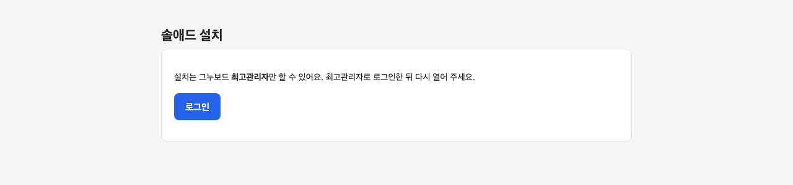
최고관리자로 로그인한 뒤 다시 열어 주세요. -
환경 점검 표가 모두 "확인"인지 봐요. "필요"가 있으면 설명대로 고친 뒤 새로고침해요. "참고"로 나온 항목(ffmpeg 없음 등)은 그대로 두고 설치해도 돼요.
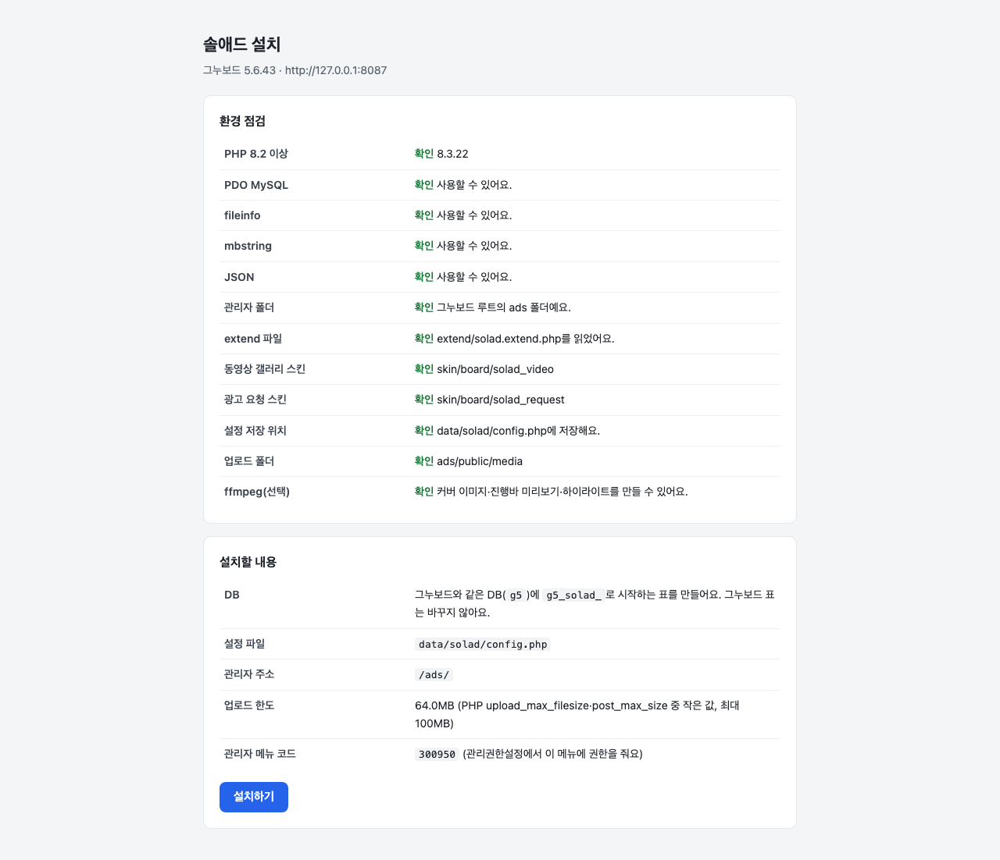
모두 "확인"이면 설치할 수 있어요. -
설치할 내용의 두 칸은 처음부터 체크되어 있어요. 그대로 두고 [설치하기]를 눌러요.
-
게시판 만들기: 동영상 게시판(
video)과 광고 요청 게시판(adreq)을 만들고, 사이트 메뉴에 두 게시판을 넣어요(PC·모바일). - 예제 넣기: 예제 영상 글 1개와 예제 하우스 광고 1개를 넣고, 동영상 게시판에 프리롤로 게시해요. 나중에 글은 게시판에서, 광고와 편성은 솔애드 관리자에서 지울 수 있어요.
-
게시판 만들기: 동영상 게시판(
-
설치가 끝나면 큰 버튼이 나와요. [동영상 게시판 열기]나 [예제 글 보기]를 눌러 예제 영상을 재생해요. 프리롤 광고가 먼저 나오면 설치가 끝난 거예요.
이 화면은 설치 뒤에도 같은 주소로 다시 열 수 있어요. 게시판 상태 표와 [게시판 만들기]·[예제 넣기]·[DB 갱신] 버튼이 있어요. 1.0.1·1.0.2로 이미 설치한 사이트도 여기서 게시판과 예제를 만들 수 있어요.
6. 게시판
설치 화면이 만드는 게시판은 아래와 같아요. 같은 이름(TABLE)의 게시판이 이미 있으면 그 게시판은 고치지 않고 "이미 있어요(스킨: …)"로 알려 줘요. 여러 번 눌러도 겹쳐 만들지 않아요.
| 게시판 | TABLE | 스킨(PC·모바일) | 설치 화면이 맞추는 값 |
|---|---|---|---|
| 동영상 | video |
solad_video 또는 solad_video_light |
글쓰기 최고관리자(10), 댓글 회원(2), 파일 2개 |
| 광고 요청 | adreq |
solad_request 또는 solad_request_light |
글쓰기 회원(2), 분류 접수|검토|보완 요청|집행 예정|집행|종료|반려, 항상 비밀글, 파일 2개,
원글 수정 불가 0
|
스킨은 사이트 테마를 따라요. 밝은 테마(그누보드 기본 테마)는 solad_video_light, 솔애드 테마는
solad_video예요. 광고 요청도 같은 방식으로 밝은 테마는 solad_request_light를 써요.
밝은 스킨은 같은 폴더의 어두운 스킨 파일을 함께 쓰므로 두 폴더를 모두 올려 두세요.
두 게시판 모두 그룹은 community(그누보드 기본 그룹)를 써요. 그룹이 하나도 없으면
solad("솔애드") 그룹을 만들어요. 파일 업로드 용량은 7절처럼 서버가
허락하는 만큼 잡아요.
wr_1(영상
주소)·wr_2(재생 시간)·wr_3(등록 형식)을 스킨이 써요. 다른 플러그인이 같은 칸을
쓰지 않게 해 주세요.
최고관리자로 광고 요청 게시판 목록을 열면 맨 위 광고 요청 게시판 설정 상자가 지금 값과 고칠 점을 알려 줘요. 솔애드 관리자와의 연결도 여기서 확인해요.
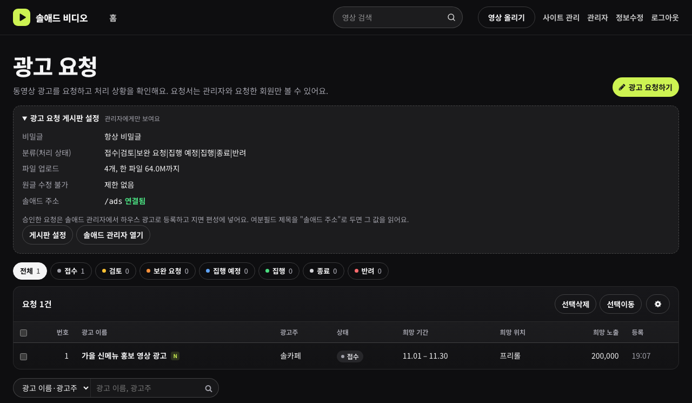
직접 만들 때
이미 쓰던 게시판에 붙이거나 이름을 바꾸려면 그누보드 관리자 → 게시판관리 → 게시판 추가에서 만들고 스킨을 위 표처럼 골라요(PC·모바일 같은 이름). 광고 요청 게시판은 분류·항상 비밀글·파일 1개 이상·원글 수정 불가 0을 맞춰야 해요. 메뉴는 관리자 → 환경설정 → 메뉴설정에서 넣어요.
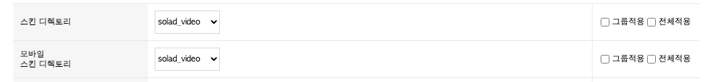
7. 업로드 용량
설치 화면이 만든 게시판의 파일 업로드 용량은 PHP upload_max_filesize와
post_max_size 중 작은 값이에요. 설치할 내용의 "게시판 만들기" 칸에 그 값이 나와요.
더 큰 영상을 올리려면 PHP의 두 값을 함께 늘린 뒤, 게시판 수정 → 기능 설정의 "파일 업로드
용량"도 늘려요. 입력 단위는 바이트예요(64MB = 67108864). PHP 값은 호스팅 관리 화면에서 바꾸거나
호스팅 업체에 요청하세요.
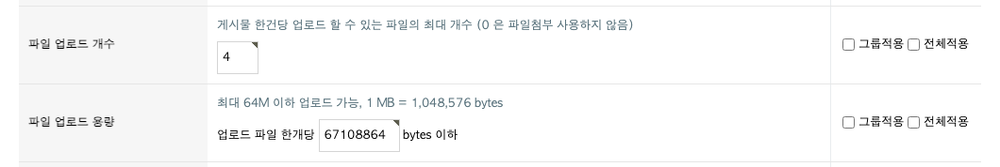
관리자에서 올리는 광고 소재의 한도는 설치 화면의 "업로드 한도"에 나와요(같은 PHP 값 중 작은 쪽, 최대 100MB).
8. 영상 추가 기능(ffmpeg)
서버에 ffmpeg가 있으면 동영상 게시판에 올린 영상으로 세 가지를 만들어 쓸 수 있어요.
| 기능 | 보이는 곳 |
|---|---|
| 커버 이미지 | 목록 썸네일과 플레이어 포스터. 글에 이미지 첨부가 있으면 첨부가 먼저예요. |
| 진행바 미리보기 썸네일 | 재생 막대에 마우스를 올리면 그 시점 장면 |
| 하이라이트 미리보기 | 목록 카드에 마우스를 올리면 소리 없는 짧은 클립 |
-
게시판 수정 화면 위쪽 탭의 솔애드 영상으로 가서 쓸 기능에 "사용"을 체크하고 저장해요. 설정은 게시판 여분필드 중 빈 칸 하나에 제목 "솔애드 추가 기능"으로 저장돼요.
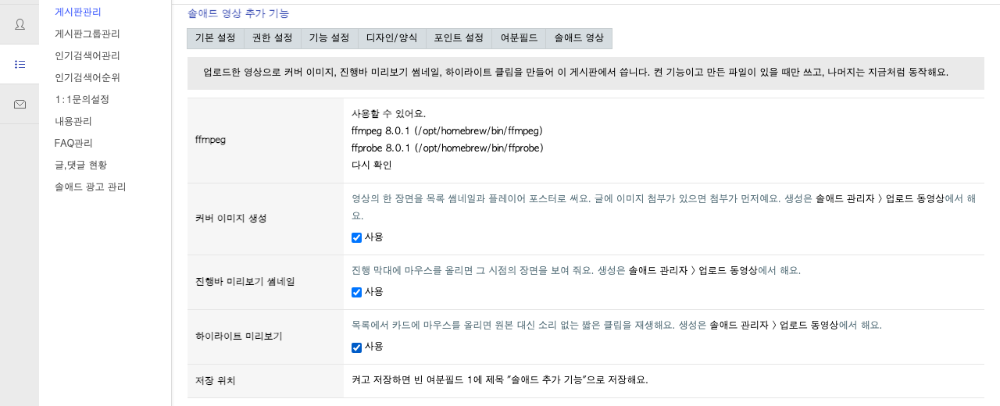
ffmpeg 위치와 버전이 보이면 사용할 수 있어요. -
솔애드 관리자 → 업로드 동영상에서 영상마다 [모두 만들기]를 눌러 파일을 만들어요. 만든 파일이 있을 때만 쓰고, 없으면 지금처럼 동작해요.
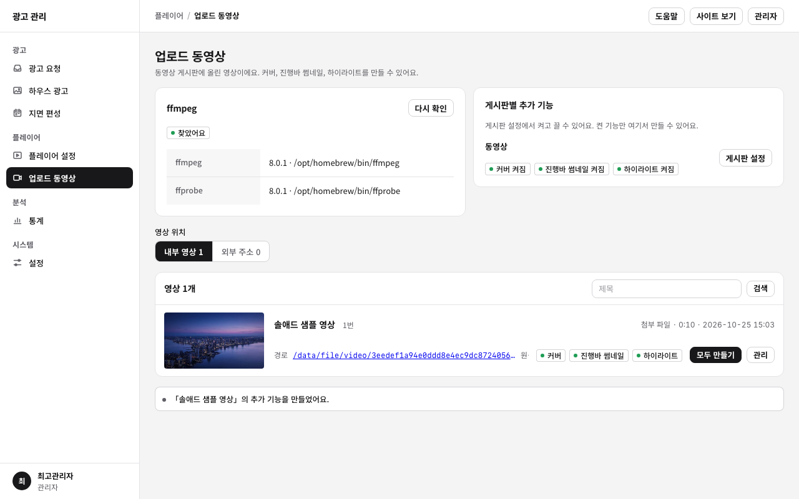
ffmpeg 상태, 게시판별로 켠 기능, 영상별 생성 결과가 한 화면에 보여요.
/usr/bin, /usr/local/bin, /opt/homebrew/bin에 없으면
extend/solad.config.php 파일을 만들어 경로를 적어 주세요.
<?php
if (!defined('_GNUBOARD_')) exit;
define('SOLAD_FFMPEG_PATH', '/경로/ffmpeg');
define('SOLAD_FFPROBE_PATH', '/경로/ffprobe');공유 호스팅은 대부분 ffmpeg를 실행할 수 없어요. 이때는 이 기능만 빼고 쓰면 돼요.
9. 운영자 권한
최고관리자는 바로 쓸 수 있어요. 다른 회원에게 광고 관리를 맡기려면 그누보드
관리자 → 환경설정 → 관리권한설정에서 회원 아이디를 넣고, 접근가능메뉴로 "솔애드 광고
관리"(300950)를 골라 r(읽기)·w(쓰기)를 체크해요.
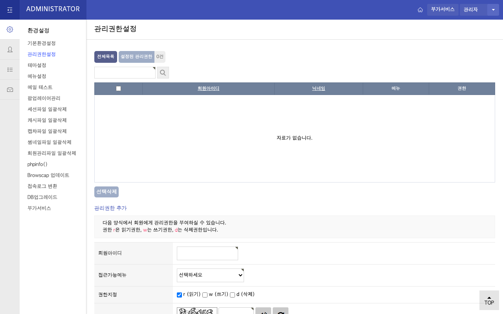
메뉴 코드가 다른 플러그인과 겹치면 extend/solad.config.php에
define('SOLAD_ADMIN_MENU', '300960');처럼 다른 번호를 적어요.
10. 테마(선택)
theme/solad는 솔애드를 소개하는 어두운 동영상 사이트 테마예요. 메인은 배경 영상과 스크롤 모션을
쓴 소개 페이지이고, 게시판·회원 화면은 같은 머리글·바닥글 안에서 그누보드 스킨을 그대로 써요.
쓰려면 그누보드 관리자 → 환경설정 → 테마설정에서 "솔애드"를 적용해요. 메인 화면의 소개 문구는 사이트에 맞게 바꿔 써야 하므로, 이미 쓰는 테마가 있다면 테마는 적용하지 않고 스킨과 관리자만 써도 돼요.
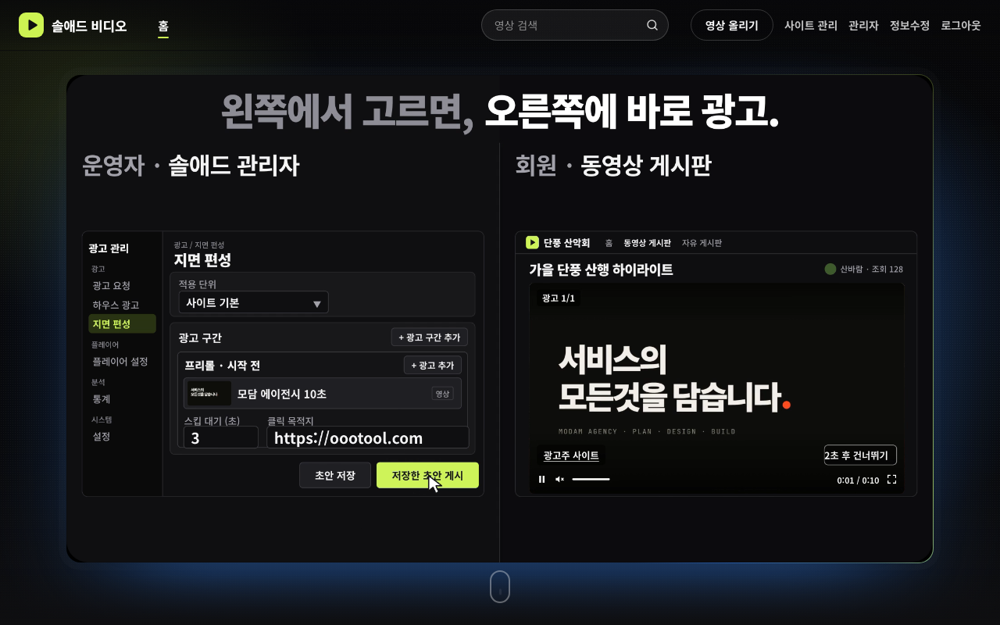
11. 설치 확인
-
설치 화면의 [예제 글 보기]로 예제 글을 열어 재생해요. 프리롤 광고가 먼저 나오면 연결이 된 거예요. 내 영상으로 확인하려면 동영상 게시판에 글을 하나 써요. 등록 형식에서 "영상 파일"을 고르고 MP4를 올리면 재생 시간과 썸네일을 자동으로 채워요.
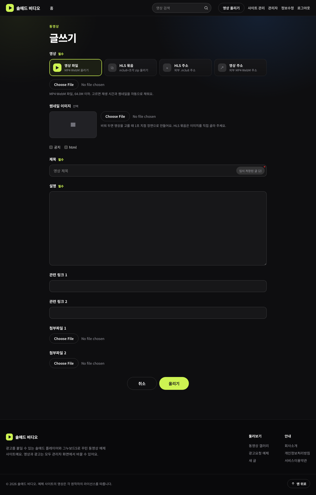
등록 형식: 영상 파일 · HLS 묶음 · HLS 주소 · 영상 주소 -
내 광고로 바꾸려면 솔애드 관리자에서 하우스 광고를 등록하고 지면 편성에 프리롤로 넣은 뒤 게시해요. 자세한 방법은 사용 도움말에 있어요.
-
글을 열어 재생하면 광고가 먼저 나오고, 끝나면 본편이 이어져요. 재생 기록은 관리자 통계에 쌓여요.
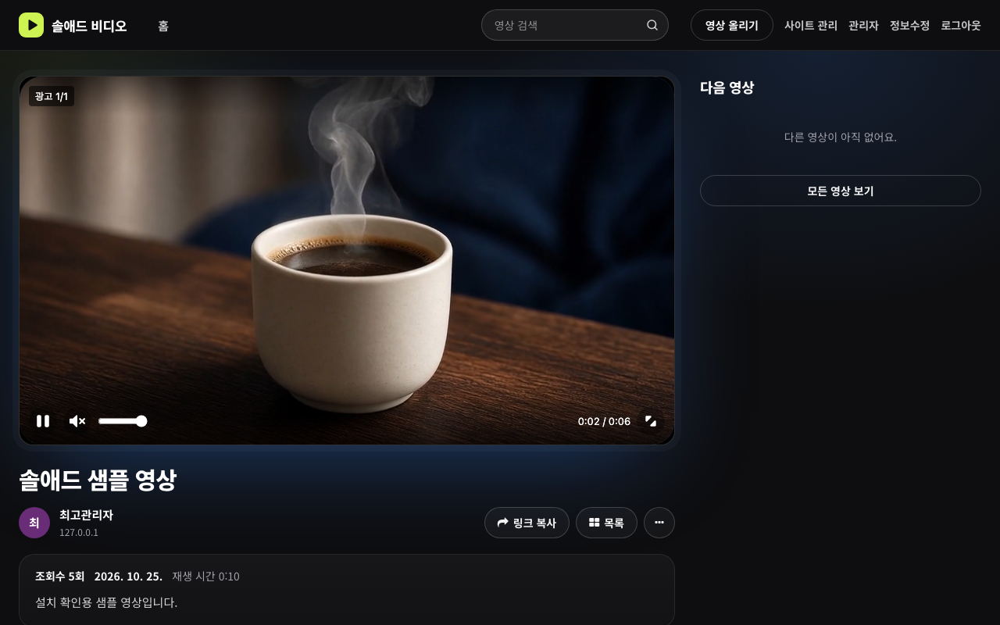
"광고 1/1" 표시와 광고주 사이트 링크, 건너뛰기 버튼
12. nginx 보안 설정(선택)
nginx에서도 설정을 더하지 않고 설치하고 쓸 수 있어요. 다만 nginx는 .htaccess를 읽지 않아서,
내부 폴더와 업로드 폴더를 막으려면 설정을 따로 넣어야 해요.
docs/nginx.conf.sample의 내용을 사이트 server { } 블록 안, 기존
location ~ \.php$보다 위에 넣고 nginx를 다시 읽혀요.
-
내부 폴더(
ads/src,hosts,admin,database,bin)는 404로 막아요. - 업로드 폴더
data/media는 솔애드가 만든 파일 이름만 내보내요. -
적용 뒤
/ads/src/load.php가 404이고/ads/setup.php는 그대로 열리는지 확인해요.
13. 업데이트
-
새 버전의
upload폴더 안 파일을 같은 자리에 덮어 올려요. 1.0.0·1.0.1에서 올리는 경우는 3. 파일 올리기의 안내를 먼저 봐 주세요. /ads/setup.php를 열고 [DB 갱신]을 한 번 눌러요. 여러 번 눌러도 괜찮아요.- 1.0.1·1.0.2에서 올렸다면 같은 화면의 [게시판 만들기]·[예제 넣기]로 아직 없는 게시판·메뉴·예제를 만들 수 있어요. 이미 있는 게시판은 고치지 않아요.
설정(data/solad/config.php), 올린 광고(data/media), 광고·편성·통계 데이터는 그대로
남아요. extend/solad.config.php를 만들어 썼다면 그 파일도 배포본에 없으므로 덮어써지지 않아요.
14. 문제 해결
| 증상 | 확인할 것 |
|---|---|
| 영상 글을 올리면 "용량" 오류가 나요 |
게시판의 파일 업로드 용량(직접 만든 게시판은 1MB)과 PHP
upload_max_filesize·post_max_size
|
/ads/setup.php가 404예요 |
ads 폴더가 그누보드 루트(common.php 옆)에 있고 그 바로 아래에
setup.php가 있는지. 1.0.0·1.0.1 위에 덮어 올렸다면 3. 파일 올리기의
정리 순서를 봐 주세요.
|
| 관리자에서 올린 광고가 재생되지 않아요(403) |
data/media 폴더와 data/media/.htaccess가 있는지(설치 화면이 만들어요). 없으면
data 폴더 권한을 확인하고 /ads/setup.php를 다시 열어 주세요.
|
| 설치 화면이 "로그인"만 보여요 | 그누보드 최고관리자(관리자 → 기본환경설정의 "최고관리자" 아이디)로 로그인했는지 |
| 관리자 메뉴에 "솔애드 광고 관리"가 없어요 | extend/solad.extend.php가 올라갔는지. 설치 화면의 "extend 파일" 항목 |
ads가 아닌 다른 폴더 이름으로 올렸어요 |
설치 화면이 알려 줘요. 동영상 게시판 여분필드 하나에 제목 "솔애드 주소", 값 /새폴더를 넣고,
extend/solad.config.php에 define('SOLAD_URL', G5_URL.'/새폴더');를 적어요.
|
| 영상 추가 기능에 ffmpeg가 "없음"으로 나와요 | ffmpeg 경로 지정. 공유 호스팅은 실행이 막혀 있을 수 있어요. |
| HLS 묶음을 올리면 zip 오류가 나요 | PHP zip 확장(ZipArchive). 없으면 "HLS 주소" 형식을 써요. |
| 광고가 나오지 않아요 | 지면 편성을 게시했는지(초안 저장만으로는 바뀌지 않아요), 하위 단계에 "광고 비활성화"가 없는지 |